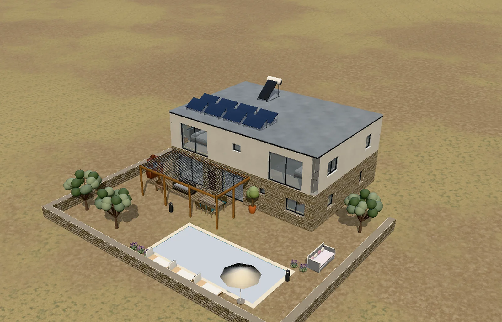

Drawing and BIM
Layered walls, doors and windows, slabs, roofs, stairs, storeys. Plans, sections, elevations, A4–A0 sheets.
One line in an olive grove. One building, down to the last pipe.
FROM THE IKTINOS FILM · PAXOS, CC0IKTINOS keeps one model for the whole building. The plan, the 3D view, the structure to Eurocode 8, the MEP networks and the energy check all read the same drawing, and every change can be undone.

3D · IKTINOSArchitecture, structure and MEP do not live in three programs that have to agree. Change a wall and the plan, the 3D view, the structure, the networks and the quantities all update.
Layered walls, doors and windows, slabs, roofs, stairs, storeys. Plans, sections, elevations, A4–A0 sheets.
3D frame, seismic design to EN 1998-1 with the Greek National Annex, column and beam reinforcement, foundations, capacity check of joints.
Water supply, drainage, electrical, low voltage / KNX, heating, ventilation, pools to HD 60364-7-702, with routing and take-off.
U-values from the layers, TOTEE 20701 tables, thermal bridges, thermal image of the facades, sun hours and shading per window.
Geodesic V1–V8 frame on a dome, glass shell, pergolas with movable louvres, photovoltaics in the Library.
“Complete building” with a single undo. The Assistant also works without AI, using local rules; connect an AI app in one click.
IKTINOS checks every project with the same rules and shows the problem on the plan. The values are after the “Analyse structure” command.
| Check | S12 villa | S13 dome | S14 offices |
|---|---|---|---|
| Joints ΣMRc / ΣMRb ≥ 1.30, including the top storey | 51 / 51 · min. 1.33 | 66 / 66 · min. 1.30 | 32 / 32 · min. 1.31 |
| Water supply: cold and hot in one network | yes | yes | yes |
| Save → close → reopen without loss | yes | yes | yes |
Wall ▾ ▸ Wall type: exposed stone outside, plaster inside only; material and thickness per layer, the total follows.
Consecutive clicks at the corners; 13 cm brick inside — the type is chosen first and the thickness follows.
Entrance door, doors and windows from the joinery menu, a click on the wall.
Slab, floors, ceilings and flat roof with one command and one undo.
New storey: the outer walls go up; two rooms, balcony, timber pergola.
The stair follows the cursor before it is placed: type, risers and height show before the click.
Completion with a tiled roof, “Structural calculation” (preliminary) and the building in 3D.
A recording of the real program (Greek interface); the timer counts program time. Click a task = the video goes there.

Column or beam Properties ▸ “Details / Analysis”: the member analysis window for that member.
N, V, M per combination; utilisation bars in bending, shear, deflection or axial — green / orange / red.
Bars per face, stirrups in the critical zone and elsewhere, arrangement: perimeter, double hoop, cross-tie, rhombus — counted in shear.
Every change is checked again at once; “Proposed solution” and “Apply” with one undo.
Members of a test frame; numbers from IKTINOS's analysis (EN 1992-1-1 / EN 1998-1). Preliminary design — not a licensed engineer's study.

One button next to 2D / 3D: a change in the plan shows on the building at once.
Insulation and waterproofing per category, thickness, m² from the drawing, λ from TOTEE 20701-2.
The IKTINOS construction-site app. The office sends the building read-only; the phone never changes the design, it sends observations.


The trial release is the current development release. Use it alongside the software you already have and check every result before you submit it.